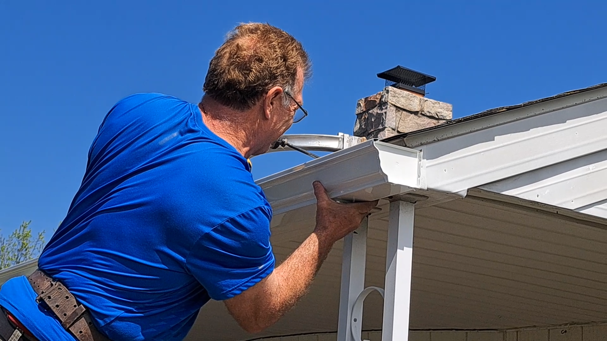

Blue Ribbon installs premium seamless gutters for West Pottsgrove and Lower Pottsgrove homeowners. Expert work for 19464 and 19465. Free estimates.
West Pottsgrove and Lower Pottsgrove Township are home to a wide mix of residential styles — from established colonials along Route 663 to newer developments off Farmington Avenue. Each neighborhood has its own drainage personality. Blue Ribbon assesses your specific lot and roofline before recommending any system.
On-site fabrication for West and Lower Pottsgrove homes. Your gutter is built to match your exact roofline pitch and fascia profile — no template-cutting.
Pottsgrove developments near wooded areas fill up fast in October. Micro-mesh keeps debris out and eliminates the bi-annual cleaning cycle.
For new and established homes alike in Pottsgrove, we engineer the downspout layout to move water efficiently off the roof and well away from the foundation.
Wind, ice, and age cause gutters to pull away from fascia. We repair and rehang existing systems in Pottsgrove when replacement isn't yet necessary.
Blue Ribbon serves West Pottsgrove, Lower Pottsgrove, and all surrounding communities in Montgomery County.
Zip Codes Served: 19464, 19465, 19512, 19525
See the difference quality makes for your Pottsgrove home.
| Feature | Standard Gutters | Blue Ribbon Premium |
|---|---|---|
| Durability | Low — Thin Aluminum | High — .032" Heavy-Gauge |
| Fit | Sectional (Leaky Seams) | Custom On-Site Seamless Fit |
| Clog Resistance | None | 99.9% Effective Guards |
| PA Winter Rating | Poor | Excellent ✅ |
| Colors | Limited | 20 Factory Colors |
| Warranty | Basic | Full Coverage |
Montgomery County homes in Pottsgrove Township see heavy rain and late-season ice. Here's your annual inspection guide:
Newer Pottsgrove developments planted trees 10–20 years ago are now mature enough to fill gutters in a single storm. Time for a guard upgrade if you haven't made one.
West Pottsgrove's relatively flat terrain means water drains slowly. Downspout extensions must be long enough to move water away from flat-grade foundations.
Hip-roofed colonials common in Pottsgrove developments collect ice at the valley centers. Ensure gutter pitch moves melting ice water away before it refreezes.
Established Pottsgrove colonials from the 1980s–1990s often have original spike-and-ferrule hangers that have backed out of the fascia. We replace with hidden screws.
"Blue Ribbon installed seamless gutters on our West Pottsgrove home and the quality is clearly better than what the builder put on. Ed was professional start to finish."
Serving West Pottsgrove, Lower Pottsgrove and all of the Pottstown area. Free estimates — no pressure.